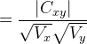
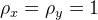

| テスト理論 |
| テスト理論 |
今、2つの観測値 とがあるとし、それぞれの信頼性が
とがあるとし、それぞれの信頼性が とであるとする。 このとき、信頼性係数の定義より、の分散は
とであるとする。 このとき、信頼性係数の定義より、の分散は
| (75) |
である。同じことがについても成り立つ。
従って、との相関係数の絶対値は、
|  | (76) | |||
| (77) | ||||
| (78) | ||||
| (79) | ||||
| (80) |
となる。 等号は、のときに成り立つ。
すなわち、測定における信頼性が完全でない限り、観測値間の相関係数は真値間の相関係数よりも0に近づく。 これを、相関係数の希薄化という。
このことは、多特性多方法行列を用いて妥当性に関する収束的証拠を検討しようとしても、測定の信頼性が高くない限り外的基準との高い相関は得られないということである。
このことから、妥当性が高いためには信頼性が高いことが必要条件であることがわかる。 逆に言うと、信頼性が低いテストについて、妥当性が高いことはあり得ない。
| テスト理論 |